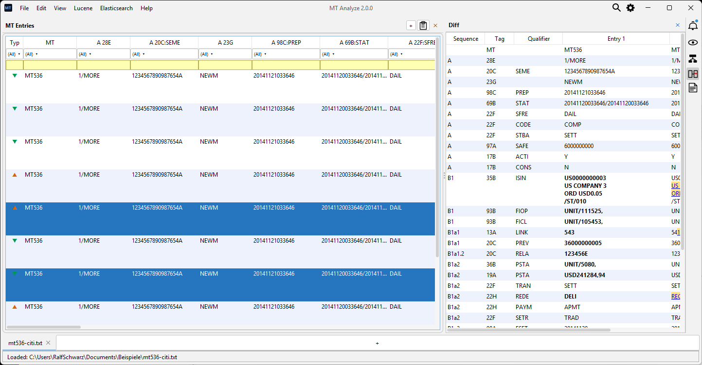

SWIFT MT Nachrichten finden und Zusammenhänge verstehen.
Große Datenmengen, unübliche Formate — die meisten Werkzeuge geben da auf. MT Analyze macht daraus eine Zeile pro Eintrag, erklärt jedes Feld nach ISO 15022 und zeigt, welche Nachrichten über ihre Referenzen zusammengehören.

Eine vereinheitlichte Tabelle für alle Einträge
Jeder MT-Typ landet in derselben Tabelle. Wiederholende Blöcke — etwa MT-536-Transaktionen oder MT-535-Bestände — werden jeweils zu einer eigenen Zeile. Gemeinsame Referenzen verknüpfen Einträge über die gesamte Transaktionskette.
Liest jedes Bulk-Format, das du ihm gibst
Öffne ein ganzes Verzeichnis, eine rohe Logdatei oder eine einzelne RJE-Bulk-Datei — alles funktioniert gleich. Remove Duplicates entfernt exakte Duplikate. Save schreibt sauberes Standard-RJE zurück.
Detailansicht zu jeder Zeile
Klick auf eine Zeile zeigt Tags, Components und Source. Zwei oder mehr Zeilen auswählen, und Diff hebt automatisch jede Abweichung hervor.
Volltextsuche, vom Arbeitsplatz bis zum Cluster
Ein Tag passt bequem in den Speicher — eine Woche nicht mehr. Dafür gibt es den eingebauten Lucene-Index, ohne Einrichtung. Soll es als Service für eine ganze Abteilung laufen, mit mehreren Nutzern und Zugriffskontrolle? Dann Elasticsearch.
Vom Statement zur Abwicklungsbestätigung
Rechtsklick auf eine MT-536-Transaktion erzeugt automatisch die passende MT-544–547-Abwicklungsbestätigung. Kein manuelles Abtippen.
Findet Nachrichten in Logdateien
MT Analyze auf eine rohe Logdatei ansetzen — ein ganzer Tageslog mit über 100.000 SWIFT-Nachrichten ist kein Problem. Gefunden und rekonstruiert, auch über umgebrochene Zeilen hinweg.
Mehrere Dateien parallel im Blick
Jede geöffnete Datei bekommt ihren eigenen Tab. Rechtsklick auf eine Zeile mit Isolate Entry in New Tab holt genau diesen einen Eintrag — etwa eine MT-536-Transaktion — ohne den Rest des Statements in einen neuen Tab.
Export nach Excel — wahlweise maskiert
Die Tabelle geht direkt nach Excel. Sensible Feldwerte wie Beträge oder Stückzahlen lassen sich beim Import automatisch maskieren, bevor sie irgendwo landen — in der Tabelle, im Excel-Export oder im Suchindex.
Unterstützte Nachrichtentypen
MT Analyze bietet typspezifische Verarbeitung für die SWIFT-MT-Nachrichten, die für Wertpapier-Nachhandel, Kapitalmaßnahmen und Kontoauszüge am relevantesten sind. Dateien anderer MT-Typen werden trotzdem über Prowide Core geparst — lässt sich der Typ nicht erkennen, wirst du gebeten, ihn auszuwählen.
Registrierung
Handelsbestätigung & Allegement
Transaktionsverarbeitung
Wertpapier-Statements
Abwicklungsinstruktionen
Abwicklungsbestätigungen
Abwicklungsstatus
Triparty-Agent
Kapitalmaßnahmen
Abwicklungs-Allegement
Kontoauszüge
Freiformnachricht
Das Parsing übernimmt Prowide Core (Apache 2.0).